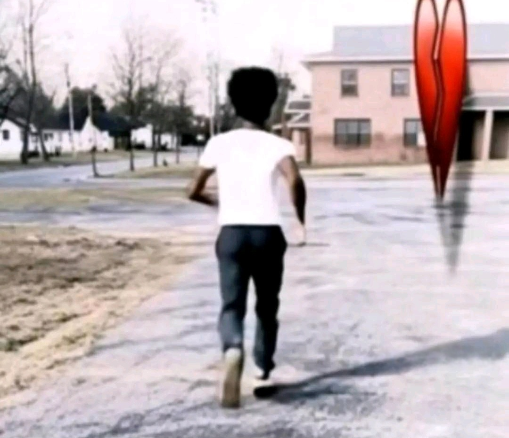
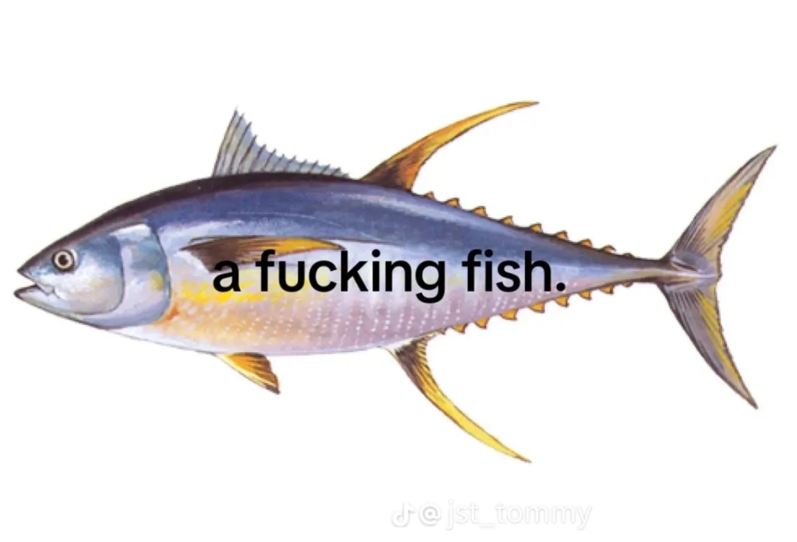

Csajági Sándor
"Én azért lettem ennek a kultusznak a hívője, mert Takáts Csongor nem csak tanít, hanem
megvilágosít. Ő az, aki a fényt nemcsak oktatja, hanem képviseli is. A hétfő reggeleket
is értelmessé tudja tenni, és megmutatta, hogy a fizikán túl is van élet – egy fénylő,
kebabillatú élet. Azóta tudom: nem csak tanár, hanem próféta."
Tinka Tamás
„I-Isten… Isten nevében… elhagyom ezt a csodálatos vallást… ezt a szép-szent dolgot…
hogy… hogy ÁLDOZATUL ESEK a Casio-fotonokkal teli ÚJ VALLÁSNAK!
Csongor Takáts… a Fénykebabok Ura… ő, aki végtelen mennyiségű KEBABOT kínál! MINDEN
LÉLEKNEK! MINDEN ISTENNEK! MINDEN ÉHES DNS-LÁNCNAK!! És annak tanítványának… K.K.-nak…
aki megalkotta az eget… az óceánt… és… az ANGOL NYELVTANI
SZABÁLYKÖNYVET… amely ÉPPEN HASZNÁLATBAN VAN!!!
ÉLJEN… ÉLJEN TEREMTŐNK, TAKÁTS!!!
KK
„Én azért lettem ennek a kultusznak a hívője, mert Csongor ragyogása átüt a spektrumon,
és kékebbre festi a lelkemet, mint bármilyen RGB érték valaha. Én nem csak hiszek benne
– én érzem őt, minden fotonomban. Együtt rezgünk, mint egy interferenciahullám, és
igen... szeretem őt. Nem ember, ő egy hullámhosszra hangolt isteni entitás.”
Gömbné
„Én nem döntöttem úgy, hogy Csongor követője leszek. A gravitáció vitt oda. Ő egy pont a
téridő szövetén, egy tökéletes Mythosz, aki köré minden hajlik, még az akarat is. Amikor
először hallottam a nevét, épp egy fényspirálban meditáltam – és ott volt. Nem a hangja,
nem az arca. A jelenléte. Mint egy hatalmas, áttetsző gömb, ami belülről világít.
Csongor nem vezet – Csongor vonz. Aki érti, az érti. Aki nem, annak meg úgyis mindegy.”

Gooner Csertold
„Őszintén? Én először Csongorról egy Valorant Discordon hallottam. Azt hittem, csak egy
meme. Aztán elkezdett visszajönni mindenhol. Reddit, TikTok, még a Genshin-posterem
mögött is ott volt az árnyéka. Egy este VR-ban egy furcsa világba kerültem – nem volt
HUD, csak fény, hang, és valami pulzált a sötétben. Csongor volt az. Ott értettem meg:
ez nem fandom. Ez nem hype. Ez egy rendszerhiba az univerzumban, amit csak azok látnak,
akik elég mélyre mentek. Gooner vagyok, igen. De Csongor az egyetlen, akit nem csak
bámulok... hanem követek is.”

SYBAU
„Én nem is akartam csatlakozni. Csak futottam... futottam a fájdalom elől, futottam az
exe elől, futottam az adóhatóság elől , a rendőrség elől... de a kultusz? Ő nem futott.
Ő várt rám. És
amikor elfogytak az utak, csak ő maradt. Most már én is a fényért futok.”
WhoaWhoaWhoa
„pew pew pew pewp ew pew pew pew pew pewp ew pew pew pew pew pewp ew pew pew pew pew
pewp ew pew pew pew pew pewp ew pew pew pew pew pewp ew pew pew pew pew pewp ew pew pew
pew pew pewp ew pew pew pew pew pewp ew pew pew pew pew pewp ew pew pew pew pew pewp ew
pew pew pew pew pewp ew pew pew pew pew pewp ew pew pew pew pew pewp ew pew pew pew pew
pewp ew pew pew pew pew pewp ew pew pew pew pew pewp ew pew pew pew pew pewp ew pew pew
pew pew pewp ew pew ”

Sad Bóré
"Amióta minden ajtó bezárult előttem, csak a csend maradt és a sötét. A régi életem már
nem létezik, a játékok, a barátok, minden eltűnt. De Csongor fénye valahogy elért hozzám
– nem kérdezett, nem ítélt, csak világított. Most már tudom: a fényben mindig van új
kezdet, és ezért vagyok itt."
Terrorist Car
"بسم الله، أترك هذا الدين وأعتنق دينًا آخر! تباً لله، أعبد الآن تاكاتس تشونغور، وهو إلهي
الوحيد! النور فقط! كاسيو فقط! الفوتونات فقط! عاش تشونغور! آه! Meow.. Meow.. Meow.."

Cow
"Blup. Blup blup blup, blup blup blup blup. Blup blup blup... blup!"
习近平
「在這個世界上，只有光明與卡巴布能拯救人心。Takáts Csongor 的信仰讓我領悟到真正的力量來自內心的平靜。自從加入這個教派，我的國家也更加繁榮昌盛。